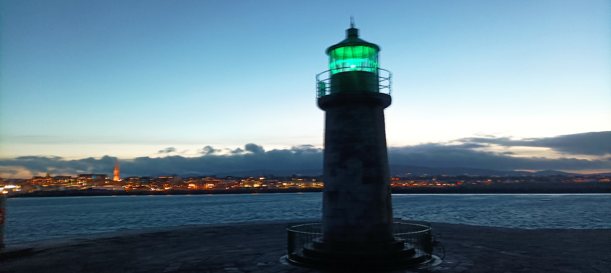
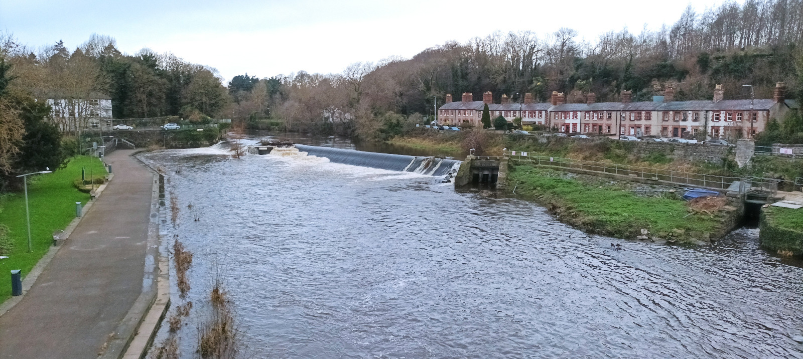
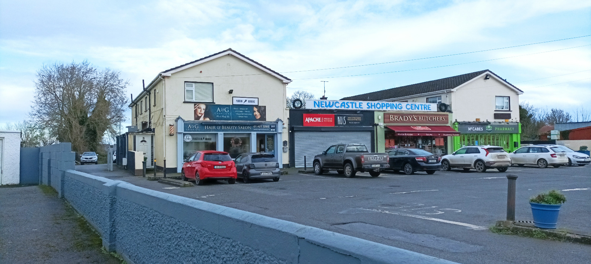
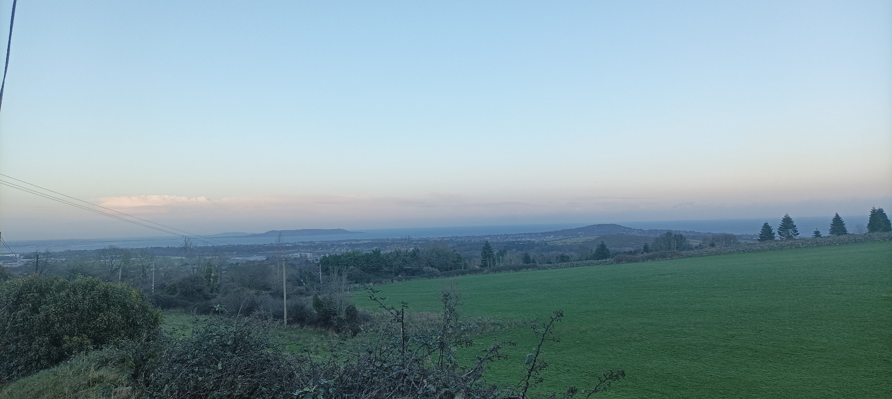
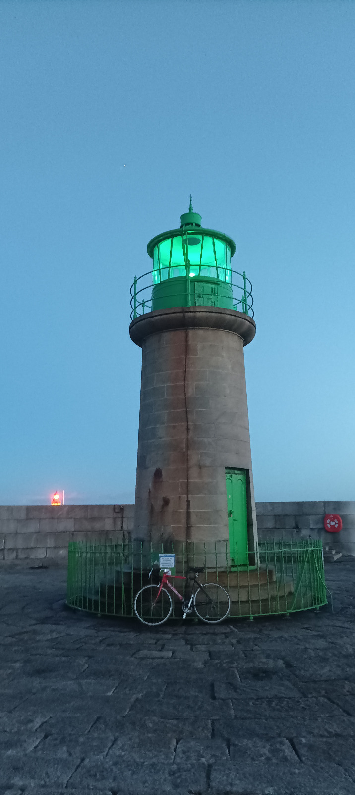

14 Dún Laoghaire 2

14.0.1 Rural South Dublin loop plan
0950 December 29, 2023. A Friday apparently
It’s six degrees and windy in Dublin today, but it’s bright and no rain is expected, although I forget to check the Dublin mountains which I’ll be quotunquote scaling later on. I’m heading to the other Dun Laoghaire pier, the one with the green lighthouse, and because I like to make things difficult for myself, I’ve decided to map out the South Dublin Rural route which I’ve been piecing together for years and reckon I can finally nail today, doing an anti-clockwise semi-circle around the unspoilt lands beyond the burbs. You start out on the River Liffey, in town or wherever, and follow it upstream and west to Chapelizod and Lucan village, along its admittedly North Bank, then you rise slowly through Backweston, Hazelhatch, Newcastle and Sagart, before taking on the Dublin Mountains, stopping off for a Brit Award in Johnnie Fox’s, Ireland’s highest boozer, and then whizz downhill to the coast to cool off in the sea if the descent hasn’t already sucked the heat out of your blood. Your endpoint could be anywhere in the built-up coastal suburbs of Dun Laoghaire, Dalkey, Killiney, although there is probably a rural(ish) path to Shankill, an area I don’t know well yet. You could also take the more-or-less bike lane back in to town along the coast and loop back your start point on the Liffey, but I know it’ll be too late and cold and dark for me this evening so I’ll be on the boola Dart. The only rule is that you have to stay in County Dublin throughout, a county whose underappreciated beauty is a hill I’m willing to die on, although in designing the route, I was unable to dodge a few hundred metres of spillover into County Kildare because further growth in Adamstown has necessitated it.
In my case, the endpoint will be Dun Laoghaire East Pier, a lighthouse which I have been saving up until I have the right moment. And that’s today. It’s the Perineum Week, the gap between Xmo and New Years, and I’m ready to get out of the Roisín while my family are still happy to chillax at home. I’m not ready early cos I like to look after the bambino in the morning while my sleep-deprived wife catches up on kip, so it’s nearly 10 o’clock agin I’m on the Dermot. I had only planned to go on a smallish spin with Arthur but he ended up on the lash with his new bird, so it’s just me, myself and the Falcon. I lash on a body warmer, a cycling jersey, a windbreaker and one of about seven orange bibs I’ve been guiltily hanging on to ever since I quit Cabra football. Downstairs, I’m wearing long johns on with cycling shorts over them, the wrong socks and my cleated cycling shoes. One day I’ll sort it all out. I pack minimally, with just a spare jersey in my back pocket and a wifebeater as a snood, to double up as an undergarment on the train home. For sustenance, I grab an apple, an avomikado, three small nartenges, some salted peanuts and some qualobant Spin 103.8s I got for my delighted wife in the Halal shop last night. She lobs some vitamins into my water bottle and gives me a fibre sachet along with a coke-bag of spirulina. The bike has a slow-release puncture, but I reckon I’ll be grand cos I pumped it up before bed and it barely flattened overnight, so I give it a quick blasteen and say my prayers. I need to buy a new frame pump, but. The wind should be on my mostly back, as it’s coming from the south-west, as per, and I’m cycling mostly eastward, bar the first chunk.
14.0.2 D15 micro-choppyoffiness
I need to get to the Liffey first so that involves Manhattaning through Dublin 15, from my gaff to the Strawberry Beds, just as in the first paragraph of this book. Since then, I’ve learnt that its lack of soul is caused in part by the distributor roads which save you from ever passing a property, as these are all walled away and disconnected from the outside world. As you sit in the miserable traffic, the only people you see, ghosting along the pavements, are the carless poor or youths, hungry for interaction and generating it out of thin air or vapes. Weaving across this matrix are the more adventurous walkers, often armed with a dog, a tiny number of cyclists, and a growing fleet of e-scooterists, squeezing through what few pedestrian gates they’ve been granted, as these walled demesnes are designed to keep out strangers rather than make life liveable for residents. Frequently, pedestrians will scale walls to save themselves a nonsense looparooney and close inspection often reveals bits of waste furniture placed strategically to provide a leg up. The design derives from rural Ireland, except now the inaccessible fields are semi-inaccessible housing estates and apartment complexes. It’s not long since this was all just fields and my dad would come here to assess weeds among the crops and advise farmers on how to #spray them. An unlikely survivor from this era are the blackcurrent bushes in his garden - and now my sister’s too - because in like the ’70s, a fella told him to come over and grab whatever plants he wanted from Coolmine Estate, before it was turned into two schools and a leisure centre. Other survivors include some grave yew trees and giant sequoias outside Scoil Oilibhéir and the adjacent Millenium Park, while some dead tree trunks have been beautifully carved into huge wooden sculptures, as part of Fingal’s stealthy efforts to improve their virgin parks.
14.0.3 Shackletown
Yet getting from Blanch to Lucan on a bicycle is a joy because the two West Dublin suburbs are separated by the narrow Liffey Valley which provides a tunnel of riverside reprieve between their respective faceless sprawls. I turn down the newly-paved Rugged Lane, where eking past other cars is now purely a matter of driving dexterity and good manners, but no longer a potholed-infused hazard for your vehicle. Unlike in the Poolbeg chapter, I turn right along the Strawberry Beds for Lucan village this time, and before long I pass the Shackletons’ defunct mill. Seeing my home territory afresh, I think of Ernest Shackleton himself and his descendants who were a few years behind me in primary school, but only my dad knew them as they came into his shop. It’s not long since I took up Mono’s recommendation to read Endurance, Alfred Lansing’s amazebant book about Shackleton leading his crew out of the Antarctic, and I must text Marco cos we’ve agreed to start compiling a list of adventure stories, as I want to plot out my next book. Plus Empire podcast are doing a two-parter about it and I just can’t get enough.

I stop at the bridge into Lucan village to look at the Doddie Weir and the river is nearly bursting its banks. There’s an old-timer there doing the basically same and he tells me it burst a while back and nearly got up to the apartments, and suddenly we are reminiscing on the floods of June 1993 when the Griffeen tributary round the corner flooded Kenney’s pub while he was in having a restorative morning pint. In fairness to him, I remember it being a Saturday, cos its was Half-Term in boarding school and Sports Day was cancelled. That evening was one of the happiest memories of my childhood as me and my dad went for a walk together, a rarity back then, to scope out the other flood point, below the Spa Hotel. We took a disposable camera, which was something you only did when you want on like holidays, and I remember being devvo when the snaps didn’t come out.
So your man reminds me that the council are after buying the Italian Embo and he reckons they’ll have space enough to lash in a car park which would do wonders for the village, which I reckon could become the nicest village in inland Dublin. I start banging on about #greenways and he even suggests putting a cycle path in to to town, and it’s good to see the idea in the local ether. My brother-in-law reckons Shackleton’s mill ought to be turned into a tourist attraction in its own right - maybe lash in a wodge of Antarctic memorabilia while they’re #atit. We still haven’t fully grasped low-key river tourism in Ireland, beyond the Jack Charlton fishing approach, and I’d love to do a tour of France cos Dexter, ithinkitwas, says the place is awash with river amenities these days. Fake beaches and whatnot. Blake-Knox might know more cos he’s a wil’ man for some river swimming, where the water cleanses your skin and the parasites clean out your probably insides.
14.0.4 My little corner of the world

I buzz through the village and grab some jam from a lone street vendor who does be outside the Protestant Church, flogging twenty-plus varieties his wife makes. I get some experimental marmalade cos there’s never any shortage of berry jam in my folks’ and then I can nip in to my aulfla for a quick hello. I turn right at Courtney’s and up Primrose Hill and then think about turning left by his old shop on this side of Tandy’s Lane, but as I see the petrol station which we still call the BP, I can hear Yo la Tengo in my head singing My little corner of the world, with the bus stop into town and the entrance to the Lucan Demesne, where we came to see those floods thirty years ago. The demesne is a magic spot, with a linear park along the river, and it keeps my parents and others sane amidst this sprawl. I can’t wait for the path to feed into the village, connecting Lucan and Leixlip in parallel to the horrendoid dualler along the high esker. Back in the David Norris, town people used to stall it out here on the boola tram for the spa water, hence the Spa Hotel above. There used to be a path down, but I don’t remember it, just the roadworks as the dual-carriageway was being put in, and I was amazed to see in an old photo that there used to be some shops here when my big sisters were young. McDonalds have long recognised it as a place that ought to be a micro-hub - like the bottom of Bow Lane in Kilmainham - with the another little tributary flowing into the river, and it’s already busier since Adamstown burst its banks into Dodsboro.
14.0.5 Big Val
I swing on up to my folks via the dualler and I haven’t brought my 300g of needlessly keys so I have to knock on the sitting-room window where Big Val is having his mid-morning doze. He jolts in his medical chair and then hobbles to the door with his stick and lets me in. He says my mother has gone out for a break and he laughs and he’s delighted I’ve brought him marmalade. He has a fierce sweet tooth and my mam is stickler for honest-to-God food so you’d nearly need to smuggle it in. We’d normally go for a walk up and down the estate, or we’d drive down to the Demesne, but I have to leg it as I know it’ll be tight for light this evening. It’s curiously offensive to not have a quick cup of tea. I don’t like rushing in his presence, partly because he won’t be around for long, but really because his nature is so calming. He has never lived in the past or the future. He’s just right there, in the moment, like a cat who can crack jokes all day. Looking after him is not a chore but constant laughter, as long as you don’t try to give him a shower. I explain today’s route around South County Dublin, all places he would have cycled around for about twenty adult years, but he’s struggling to piece it together and his memory for names is poor now, especially since Larry David nearly killed him last summer. If it was North County Dublin, where he spent twenty childhood years, it’d be burnt into his brain. He laughs when I mention that Slade Valley is on top of a hill. He can’t remember the name of the carer who was just in doing his exercises with him, though it was the good one, not like some of them. But he remembers she’s from up near Tesco where your man is from who married my sister. (They were actually #LivinginSin). This narrows it down to two carers so I ask if she was a young wan. Of course that’s a useless question cos when you are nearly 89, everyone is a young wan. So I ask if she was 25 or 45 and, bursting into laughter, he says 35. I hit the Dermot and leave him back to the empty day ahead, although he’ll be glad of it today after six family events in the last five days. As I’m leaving, he asks for my wife, whom he loves dearly, but he can’t think of her strange name either.
14.0.6 Back roads at last
I climb up the ramp to get off the N4 and turn left for Celbridge. I’ve long since learnt to avoid this road, so I turn left back towards Lucan Golf course and right up Tubber Lane, which is now a cul de sac for cars, ever since the Shackleton development in Adamstown slash Dodsboro pushed back the suburban boundary. Despite the new estates behind the hedge, I’m out of the city at last and it feels good. These are the roads I used to cycle up to my dad’s shop in Newcastle for all the summers I worked there before the recession put an end to it. I know I’ve entered Co Kildare when I see a signpost for Arthur’s Way, a route celebrating good old Arthur Guinness, who first brewed the black stuff in what is now Boyder’s gaff in Leixlip village, with its Dexter Gordon backing onto the Liffey. On the t-junction in front of me is a house where a dog used to lie in waiting and then chase me every morning, and I’m still afraid that a dog will one day catch me on the bike. The road becomes the county boundary for a bit, and the left hand side must be Dublin. I pass Hazelhatch train station and turn left for the canal bridge where McEvoys thatched pub has carved out a beautiful niche for itself, beside the barge residents, whose number has grown significantly since those glorious Celtic Tiger days.
14.0.7 “Hello, Val Ryan Agri-Centre, Newcastle?”

It’s a couple of clicks up the Hazelhatch road before turning left to Newcastle village, where McEvoy’s old thatched pub lies in burnt out ruins, but the rest of the village has finally been populated with houses and shops, giving it the contiguity it never had. Newcastle is not on the road to or from anywhere so people need a reason to come here, and there were precious few. For twenty years, our shop brought in all sorts and was the biggest melting pot of Irish people I’ve ever seen. Local farmers would get feed for their cattle, sheep, hens and horses. Lar Harney, Mary’s brother, would saunter in, sporting odd wellies and a stench of manure. Horsey people came from North Kildare or the Dublin mountains nearby. Another breed of horse owner came from the estates in Clondalkin and Tallaght, most of them second and third-generation city people. Then there were Travellers living in uncharted gaps on the map, with a brogue I couldn’t understand at first. Many customers converged for races held on like the Naas Road of a Sunday morning. Some met for dog fights and I remember a handful of regulars being sent down for it. Unlike horses, anyone can have a dog, so that brought in surburbanites from Lucan and Celbridge, and they might grab a few bits for their little gardens, while being shocked at the hack of the actual place. The banter quotient was something else and we had a nice comfy chair nestled among stacks of animal feed. Some customers would just sit there and soak up the craic or looks for tips for the horses. The Celtic Tiger put cash in the pockets of everyone, and that added an intensity to the manual work which hadn’t been there in the 90s. I remember coming up here with Babs when I was really young and the place was dead in the summer. Dick Smith would sit on the wall outside, watching nothing go by, and Trisha Smith, no relation, would come down from the hairdressers upstairs and drink tea with Babs. She was still lifting bags when she was heavily pregnant and later her husband took over for fifteen years. Big Val himself joined forces when the original branch in Lucan had to close in ’A3. I’d work long slow summers, intense Saturdays throughout the year, and any other gaps in the academic calendar. The whole operation went tits up in the recession and there was talk of someone washing money nearby. I’ll never forget the misery and shame of being out of stock and losing customers every day, around ’A8 and ’A9. Customers said you couldn’t give horses away. It was tough going on my dad and especially my brother-in-law who tried to keep the show on the literally road before packing it in fully. We were fifteen years behind the curve on mechanisation because there’s only so many bags of feed one person can handball per day per year per life. But by Christ was it good craic dealing with all those people coming, going, and often loitering, especially for a little sheltered kid like me.
14.0.8 Sagart & Slade Valley
Between Newcastle and Rathcoole slash Sagart is a #BusinessPark which gets bigger every time I come here. The slow drag on the road increases incrementally and soon the hills are very near, across the N7. I stop off in Sagart for coffee in Insomnia and a bite of my provisions, thinking I’ll get some nosebag in Johnny Fox’s in about two hours. It’s midday now and my brain is freed up as soon as I thrash out a thousand thoughts and I’m back on the Dermot making an indulgent detour up and over Slade Valley. I remember cycling here the day Lady Di died - on one of the very few occasions I came out cycling with my folks as a chunfla - and I’m trying to rewrite the headlines but the words are too similar to make good puns. The climb is easy in this direction and there’s nothing to contend with bar micro-ramps of fifty or a hundert metres, and on top there’s a good view over South-West Dzublin from up here, if that’s what you’re into, a golf course, and a stop-off point for dogwalkers to park up and explore the woods. The descent is fast but it’s miserable on this bike cos I’m all cramped up, even though I had a longer stem put on, with a sexy Italian flag engraved into it, and wider handlebars for my rhino shoulders.
I come out on the N81 to Blessington - a road to be avoided on a bike - and the wee lake behind the hedge looks more swollen than usual. I turn right and then a quick left into the tiny village of Brittas. There’s a left up Mount Seskin, which is a quiet alternative to the N81 if you’re ever heading back in to Tallaght but I punch on and follow the road to Ballinascorney cos I’m trying to loop back to the Glenasmole valley and then up to the Military road. It’s proper rural here and the mountains in front look deloosh. There’s a very steep valley descent towards Kiltipper and the outer burbs but I hang a sharp right for the mountains.
14.0.9 Glenasmole Valley
The Glenasmole realm is shaped like the Circus Maximus, with a road looping around the Bohernabreena reservoir at its centre, feeding townwards into the Dodder river, and mountainwards up to Kippure. My problem is that it has started raining. Sparse but thick droplets with no mercy are getting in to me. This is classic Irish misery. A bit of rain. A bit of cold. A bit of wind. Like fighting three dwarves at once. It‚Äôs a good time to stop and refuel because the hard climb is just ahead of me, so I park up at the wee bridge and huddle under some winter foliage, then I tuck in to those delicious dates which have been marinading in salty peanuts. I‚Äôm in heaven as I dunzo the most of my water. A few families are out for a wander but no one is in yappy form, either because of the weather or cos they are a bad advertisement for the Dublin populace ‚úä üçÜ.
14.0.10 Going to The Well

The 3.5k climb up to the Military Road averages 8% but it varies a lot. I’m trying to zigzag my way up by the road is too narrow and I’m so slow that the sheep might start chasing me. It’s hard to get a rhythm on this ancient bike as I lug almost seventeen stone up it, between my ineluctable self (13 stone), the Paul van (2 stone), and some evenly-distributed blubber which isn’t failing to insulate me. Nowadays you can lash twelve cogs on a back wheel and keep your cadence as you transition seamlessly between them, but older bikes didn’t have space for that, so in order to get this yoke up steep hills I’ve had to install a seven-speed freewheel with one huge cog for emergency steepness and six normal-sized ones for everything else. Right now I need about fifteen gears plus a granny gear on the front but the bike apparently can’t support three at the front either. I was up here early in the summer with Kilroy and, fair play to him, he nailed it. But Blue Thunder’s chain kept coming off even though its gearing is otherwise very good, so I had to dismount twice and fix it. I think it’s fair to say that I’ve earned the right to a good road bike.
When I get to the top of the steepest wall, a car stops to let me pass and, as I thank him with a nod, he gives me a little clap and I break into a huge smile which gets me through the next few hundred metres, but the climb just keeps on going. I have to go deep but again the lack of rhythm means I can’t find it and have to stop. My head is not calm enough. Eventually, I remember previous pains like nasty rugby training or the horror of suicide when people can’t keep going and that urges me to push on, and then I recall some tough times in my own marriage and overcoming that gives me one last push. It’s like methodical drill now. I struggle. I reach for known bad stuff and I keep going, and when I can’t go any more I have to find unrecognised bad stuff, and then it gets added to The Well.
At the top, the road is frighteningly windy, like don’t-go-cycling windy, but my only choice would be to descend from whence I came and not complete today’s journey. So I punch on left to stay in Dublin and the cold is in me now. This is clearly how the lads in the Giro musta felt in the wind and rain and cold nearly every day this year. I stop off at the viewpoint and take a quick snap of the city below, and I descend further towards the veerright off to Johnny Fox’s. As I take on its short, entrance ramp I’m suffering and have to stop where the hikers park for Tibradden Woods. A cycler-by asks if I’m ok and I say I’m just wrecked and need a break. But it’s slowly dawning on my how bad I am and he can probably see it. I feel lightheaded and it reminds me of a time I got dehydrated but I’m not thirsty. Just miserable and weak. Later on my wife suggests I might have mild hypothermia, and that would explain my slurred speech. I may already be past the shivering stage. Right now though I’m thinking some scran and a Britney in Johnny Fox’s will sort me out in 6k’s time. I’ve always loved this valley cos it’s a gorgeous but carries neither the pain of climbing nor the stress of descending. Just the false flat decline of joy.
14.0.11 Johnnie Fox’s
I get in and order a pint, a coffee, some water and crisps. I badly need a meal but it’s 315pm now and I don’t have time with the light fading. Luckily people vacate the big table by the fire so I set up camp, and hang my windbreaker and shoes on the grill to dry out, then I put my back to the fire, angled slightly towards three ladies having the lolz cos I don’t want to ruin their chats with my misery. The place is too busy to be a refuge but the layout works because squashing people in tightly provides a good pathway for atmosphere. I’m in no state for joining anyone’s conversation, nor to soak up minor variations among the tourists, bar the Yank Boomers out front, talking about the joys of massive rental yields, par example. So I ping a lads’ group on WhatsApp to see if anyone is round Dun Laoghaire for a pint in an hour and I get one biter so that gives me something to look forward to. I’m out the door after nailing the pint and I leave my wee a voice message for my wife but it’s a bad idea cos the cold and pain hit my body as I speak, and I can hear myself slurring, but it’s not the beer.

On the tricky descent, I see Killiney Hill and Howth Head at once and it’s a siblingship I hadn’t thought about before, two humps marking the boundaries of Dublin Bay. I chicane through Kilternan and then down the bendless shallow descent of Ballycorus Road and now the pint in my system has kicked in and it makes me feel nineteen again, unfrightened and at ease with myself and the bike. The road from the N11 rising to Killiney Roundabout is as good a set up as you’ll get on an urban bike lane in this country, and then I discover another bike lane hiding behind the trees on the road down to Glenageary slash Dún Laoghaire. It’s a good thing cos it’s getting dark now.
I’m tempted to sit down for food and a pint now cos Stafford should be here by now, but I decide to nip down to the lighthouse first and tick that box. This turns out to be a good decision cos it’s actually a 3k spin from the Dart Station to the end of the East Pier, past a boatload of sailing clubs. I ask a lady if you can traverse the pier and she says ‘not on a bicycle’ in that scornful manner typical of pass-remarkable Irish women. There are quite a few walkers out and their unleashed dogs convert the pier into a slalom course. There are two levels so the lower one - maybe seven metres wide - is slightly sheltered and I stick to it, halving my view of the Dublin seascape in the dark.

The lighthouse is a lot more beautiful than I had expected, its classy stone (CHECK TYPE) complementing its beautiful green glow in the last of the gloaming. Dun Laoghaire looks resplendent with its tall church tower and town lights, while the mountains cling to their duvet of clouds. I cycle back into the fierce breeze but I’m feeling good now. I check my messages and it turns out that your man had been replying to a different pint request so I’m back on my Tobes now with no bike lock. The inspector in the dart station lets me leave my bike in his office and he suggests eating in a boozer which turns out to by dúnta. I don’t know that many people in Dun Laoghaire. I could have texted Dorgan nearyby, or Ros who might be home from London although she’ll have the bambino. I’d’ve texted Eabha if she hadn’t passed away last year, the poor thing. So I end up going in and out of several boozers hoping to hit the jackpot. McLaughlins is jammers and foodless so I stall it back in to the Lighthouse bar,s which tries to be all things to everyone, except for those of us who don’t want to pay an extra €5.50 for some skinny chips with their kid’s portion chicken burger for €12.50. Afterwards, I stall it back to Dunphy’s for two swift ones at the bar and I hear all about Johnny from Ballybrack’s dogwalking schedule, then I’m back on the Dart station where the ticket inspector has kindly stored my bike. In my carriage, there’s a horrendufied young wan from Donaghmadourravit, screaming into her Tony about being left all alone in Dun Laoghaire and how she’s not responsible for what her little brother does to the people who left her here stranded. Thankfully the Maynooth train is waiting for me in Connonlly and I’m home by eight where my wife has cooked some roast beef and mash, and she gives me a blanket to warm up and a scolding to cop on.